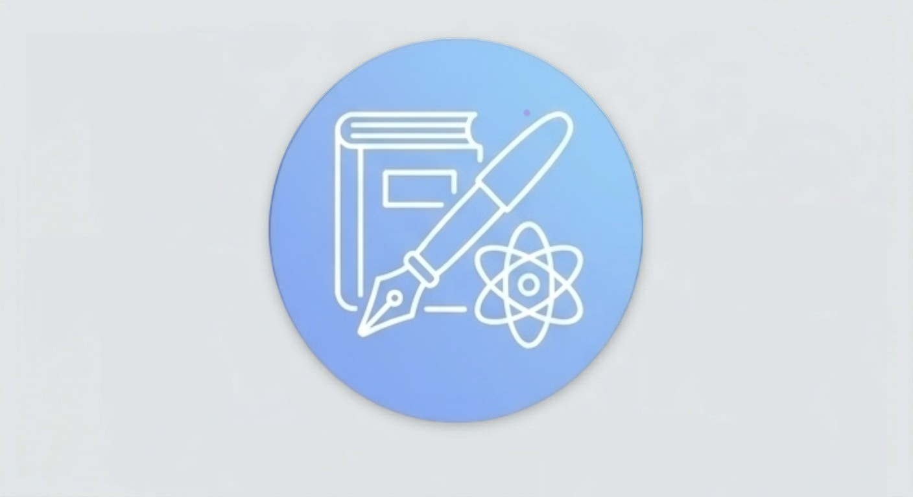

🖋️ Знайдіть репетитора для вашої дитини:
онлайн чи офлайн
Підібрати викладача🚀
Переваги нашого каталогу
✔️ Прямий контакт із викладачем:
Натисніть кнопку «Подзвонити» в анкеті репетитора — і ви зв'яжетеся з ним безпосередньо, без заповнення форм, посередників і прихованих комісій.
✔️ Максимально комфортний користувацький інтерфейс:
Фільтри та зрозуміла структура дозволяють швидко підібрати фахівця за містом, предметом, вартістю та іншими критеріями для вашої зручності
✔️ Можливість ознайомитися з відгуками:
Відгуки інших користувачів дозволяють краще оцінити досвід співпраці з викладачем і зробити зважений вибір.
Наші спеціалісти
Часті запитання про послуги репетиторів та фахівців
Як зрозуміти, чи потрібен дитині репетитор?
Якщо дитині важко засвоїти окремі теми, вона регулярно отримує низькі оцінки або потребує додаткового пояснення матеріалу, додаткові заняття бужуть корисними. Іноді може бути достатньо кількох занять.
Як обрати репетитора для дитини?
Зверніть увагу на досвід фахівця, опис послуг і формат занять. Перед початком навчання обговоріть цілі дитини та очікувані результати. Якщо репетитор пропонує пробне заняття, воно допоможе зрозуміти, чи підходить вам його підхід до навчання.
Онлайн чи офлайн, що ефективніше?
Обидва формати можуть бути ефективними. Онлайн-заняття дозволяють навчатися дистанційно та заощаджувати час на дорогу. Офлайн-заняття передбачають особисту зустріч із фахівцем. Обирайте формат, який відповідає потребам дитини та вашим можливостям.
Як зв'язатися з репетитором?
Натисніть кнопку "Подзвонити" в анкеті репетитора і ви одразу зможете зв'язатися з ним. Варто пам'ятати, що деякі репетитори можуть мати обмежений час на зв'язок, в таких випадках варто писати на месенджери.
Як додати свою анкету до каталогу Репетиторів та фахівців з розвитку дитини Дніпра?
Угорі нашої сторінки є кнопка "Стати фахівцем" - натискаємо її, заповнюємо всі поля і після перевірки адміністратором вашу анкету буде додано до Каталогу репетиторів та фахівців з розвитку дитини Дніпра. Якщо ваша основна форма роботи з учнем "онлайн", то ваша анкета буде відображена також і в інших містах каталогу.
Чи можна знайти репетитора потрібного міста?
Так, використовуйте фільтр міста, щоб переглянути доступних фахівців у вашому місті. Варто зазначити, що більшість репетиторів працюють також онлайн і можуть працювати з учнями незалежно від міста.
Чи можна знайти репетитора для підготовки до іспитів?
Так, варто звернути увагу на опис послуг кожного фахівця та уточнити чи проводить він підготовку до потрібного вам іспиту.
Чи є в Каталозі фахівці не тільки з навчальних предметів?
Так, в каталозі можна знайти і інших фахівців, які допомагають у розвитку дитини, таких як логопеди, психологи та дефектологи.
Скільки коштує послуга репетитора у Дніпрі?
Ціни на послуги репетитора у Дніпрі можуть відрізнятися залежно від предмета, рівня складності та досвіду фахівця. Зазвичай вони коливаються від 150 до 600 грн за годину.
Шукаєте репетитора в Дніпрі?
Навчайтеся онлайн із викладачами з різних куточків України, не витрачаючи час на дорогу. Живете в Новокодацькому або Самарському районі чи в іншій частині міста? Для онлайн-занять достатньо зручного місця та доступу до інтернету.
Наш каталог також допоможе батькам і школярам ознайомитися з пропозиціями репетиторів у Дніпрі. Тут можна шукати викладачів для вивчення української мови та літератури, англійської, німецької, польської й французької мов, математики, фізики, хімії, біології, географії, історії України та інформатики. Також репетитори можуть допомагати систематизувати знання, розібрати складні теми та готуватися до НМТ. Конкретні напрями роботи залежать від спеціалізації кожного викладача.
Для дітей, яким потрібна додаткова підтримка в розвитку, у каталозі передбачені також анкети психологів, логопедів і дефектологів. Батьки можуть ознайомитися з інформацією про спеціалістів, дізнатися про їхні напрями роботи та вибрати відповідний варіант залежно від потреб дитини.
💬 Відгуки наших користувачів
Ми слідкуємо за відгуками користувачів каталогу.
Дякуємо репетиторці, Олені (ENGLISH SPACE) за роботу з нашим сином! Йому 10 років, і раніше англійська здавалася нудним шкільним предметом. На заняттях усе змінилося: уроки проходять у формі гри, з цікавими завданнями та розмовною практикою, тож дитина займається із задоволенням і навіть сама нагадує про урок. Викладач уміє знайти підхід до дитини, терпляче пояснює, вчасно хвалить і підтримує. За короткий час помітний прогрес: збагатився словниковий запас, син став сміливіше говорити і з інтересом виконує домашні завдання. Щиро рекомендуємо! 💖
15.10.2026Ви фахівець?
Якщо ви репетитор, психолог, логопед або дефектолог і бажаєте, щоб більше сімей дізналися про ваші послуги, зв'яжіться з нами!
🖋️ Заповнити анкету фахівцяМи безкоштовно додамо ваше оголошення до каталогу.
⏱️ Додавання анкети займає лише хвилину.
Інші міста:
Рекомендуємо в Дніпрі

Єгор
🖋️Англійська мова
Надаю послуги репетитора з англійської мови. Навчаю дітей з 6 років та дорослих. Освіта вища, досвід роботи понад 6 років. Пишіть або дзвоніть 0661208697, 0993977303
⭐Новий (0 відгуків)
🏆8 років досвіду
📚 Формат занять: 💻 Онлайн
💰400 грн. - 60 хвилин для дітей, 500 грн - 60 хвилин для дорослих
📍Дніпро
📞ПодзвонитиОлена
🖋️Англійська мова
Я — репетитор англійської мови для дітей, який допомагає учням вивчати мову легко, цікаво та без страху помилок. У своїй роботі використовую сучасні методики навчання, орієнтовані на вік дитини, її характер і рівень знань.\n Створюю інтерактивні уроки, використовуючи різноманітні завдання, які допомагають учням краще засвоювати матеріал.
⭐Новий (0 відгуків)
🏆35 років досвіду
📚 Формат занять: 💻 Онлайн
💰350 за 60 хв
📍Дніпро
📞ПодзвонитиОльга
🖋️Англійська мова
Telegram: @eng_olya Індивідуальні та групові уроки для дітей, підлітків та дорослих. Як вчитель я маю 6 років досвіду викладання англійської. Також маю 3-х річний досвід роботи в англомовній компанії в Європі. Використовую сучасні методики та цікаві матеріали. Працюю на розвиток спілкування, граматики, лексики, письма. Пропоную гнучкий графік та індвидіально підібрану програму створену під Ваші запити.
⭐Новий (0 відгуків)
🏆6 років досвіду
📚 Формат занять: 💻 Онлайн
💰Індивідуальні заняття (всі рівні) : 45 хв - 350 грн, 1 година - 380 грн. Групові заняття, від 3-х людей (рівні В1 і вище) : 1 година - 300 грн
📍Дніпро
📞Подзвонити